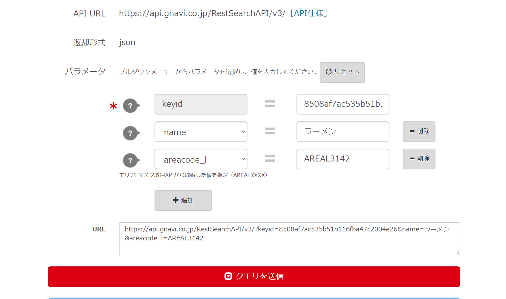

WebAPI で手軽に機能を実装する
今日は WebAPI の紹介と簡単に使い方について書きたいと思います。 現在さまざまな WebAPI とそれの使い方についての記事がたくさんある中で大体内容は似てくると思いますが、その存在を知ってもらい、開発の選択肢の一つになれば幸いです。
API とは
最初に簡単に API の説明をしておくと、 API とは Application Programming Interface の略で、 その文字通りの意味をとると、アプリケーションとプログラミングをつなぎ合わせるものということになります。
API にもいろいろありますが、一般的にはある機能を API として公開することで、第三者がその機能を API を呼び出すだけで簡単に利用できます。
これらを用いることで欲しい機能を一からプログラミングすることなく簡単に実装することができ、作業の効率化、セキュリティの向上等が見込まれます。
webAPI
では webAPI とは何かというと、もちろん API の一種で、 その名の通り web 上に公開されていて、外部からの呼び出しで利用可能な API です。
Amazon や楽天と言ったサイトの商品情報を取得したり、利用することで Google の提供している OCR(光文字認識)といった、機械学習的な機能を取り入れることなどが出来ます。
他にもさまざまなシチュエーションで活用できる webAPI があるので下記サイトを挙げておきます。
またこれらは web サイトだけではなくスマホアプリや物によればゲーム開発などにも使えるので知っていて損はないのかと思います。
・参考サイト
おススメ webAPI
サイトに載っているものから、個人的におススメのものを何点か挙げておきます。
Google Sheets API
google spreadsehet の書き込み、読み込みなどができ、簡易的なデータベースとして利用できます。特にちょっとしたアプリなどに利用すると便利です。
Google Cloud Vision API
顔や文字などの画像認識ができる API です。やってみたら結構楽しかったりします。無料で十分使えますが、その場合使用制限があるので注意が必要です。
LINE Messaging API
ラインで自動返信する bot などを作ることが出来る API です。。既存のもので bot を使えるやつがありますが、これを利用するとより自由度が高い bot を作成することが可能です。
今回紹介したもの以外にもギャグみたいな面白いものだったり、便利なものが色々とあるのでこんなのあったらいいなと思った時に調べてみると実はあるかもしれません。
使い方の例
webAPI では現在、基本的にデータのやり取りに json 形式が利用されます。（もちろん xml 形式を用いるものもあります。）
json については簡単に参考サイトを載せておきますので興味のある人は見てみてください。
・json ってまず何？
「分かりそう」で「分からない」でも「分かった」気になれる IT 用語辞典
・json の使い方とか
今回は上記の API 一覧にのっている「ぐるなび API」を例として使い方をざっくり紹介したいと思います。
ぐるなび API って？
ぐるなび API はぐるなびが提供する WebAPI で、ぐるなびに登録されている店の情報や、分野別の店の検索等が出来ます。
日本の企業でサイトも日本語で書かれていて、利用方法も簡単な url の取得だけで、テストツールも分かりやすく使いやすいことから webAPI を初めて利用する初心者の方に個人的にはおススメです。
ぐるなび API の使い方
-
ぐるなび API のサイトにアクセスする。
利用規約や初めての方へなどを予め読んでおくと良いです。 また 「API 仕様」の欄にてどのような API が提供されているかを詳しく見ることで使いたい機能を整理します。この API からは、レストラン検索 API や都道府県マスタ取得 API などがあり、レストランを検索したり、業態別、地域別にお店を絞り込むことができるようです。
ぐるなびAPIサイト -
テストツールを使ってみる
API 仕様を確認した後はテストツールを使ってみましょう。上部のテストツールという欄をクリックします。そうすると下のような画面になります。今回は試しにレストラン検索 API で検索タブを name にラーメンにでもしてクエリを送信をクリックしてみましょう。
そうするとクエリを送信ボタンの下に json 形式のデータが出てきます。 これを見ると、たくさんのお店、かつラーメン屋が出てきたことが分かります。
他にも店の場所や説明なども載っていると思いますが、上記の key を指定し、条件を絞り込むことでそれらの指定をすることが出来ます。
テストツール画面 次に大阪難波駅にあるラーメン屋さんのデータを json 形式で取得してみましょう。
検索の地域を絞るには同ぐるなび API にある"エリアLマスタ取得API"を使ってみます。
この API は場所のコードのデータを返してくれるのでそこから大阪難波の欄を探し、その"areacode_l"の値をメモしておきましょう。
例）
"garea_large":[ ... { "areacode_l": "AREAL3142", "areaname_l": "難波・道頓堀", "pref": { "pref_code": "PREF27", "pref_name": "大阪府" } }, ... ]次にレストラン検索 API に戻り、areacode_l をメモした値にした後、 クエリを送信すると、大阪難波駅周辺のラーメン屋の json データを取得できるようになります。
取りたいデータが出てきたらその上にある URL という欄の url をメモしておきます。
例）
https://api.gnavi.co.jp/RestSearchAPI/v3/?keyid=(ここは後に取得するkeyidの値）&name=ラーメン&areacode_l=AREAL3310 検索例 その他にも現在位置を別の API で取得して今いる位置の近くの店を検索したりするなど様々な条件で試してみるのもいいかもしれません。
-
新規アカウント登録
テストである程度データの構造が分かったら、次は実際に使用します。 ぐるなび API を利用するには、アカウント登録で個人情報や利用目的など、いくつかの項目に答える必要があります。利用用途の欄がありますが、とりあえず始めるだけなので’試しに使用’でいいでしょう。これは使用期限はありますが、機能としては問題ないです。
-
コードに取り入れる
アカウントの登録が終わったらぐるなびからアクセスキーが発光されるので、 先ほどメモを取った url の keyid 以下の文字列をアクセスキーに置き換え、利用することで指定した条件のお店を検索することが出来ます。コードについては利用方法は使用言語によって異なってくると思うので、詳しい話は省きますが、とりあえず GAS(Google Apps Script)での利用例を載せておきます。
(GAS についての紹介はよければ下まで)
function myFunction(e) { //取得したアクセスキー var gurunaviAPI = PropertiesService.getScriptProperties().getProperty('GURUNAVI_TOKEN'); //データを取得するためにアクセスするurl var url = 'https://api.gnavi.co.jp/RestSearchAPI/v3/'; url = url + '?keyid='+ gurunaviAPI; var gurunaviId = url + "&name=ラーメン&areacode_l=AREAL3142" var shop_url = UrlFetchApp.fetch(gurunaviId); //jsonのデータを配列に変換 var json = JSON.parse(shop_url.getContentText()); //取得したデータ一覧表示 Logger.log(json); //rest以下の項目を取得できる //検索候補１つ目の店名を表示 Logger.log(json["rest"][0]["name"]); }
{kind=link}
{kind=link}
{kind=link}
ここまで順を追って簡単にぐるなび API のデータの取得から利用方法まで見てきましたが、条件をある程度絞った中でユーザーに条件を入力してもうなど紹介したもの以外でもやり方は色々あると思うのでよければ試してみてください！
あと注意としてはお店のデータが"ぐるなび"と"ぐるなび API” では異なり、思ったような店が出力されないというのがあるのでまずはお試しという形で利用したほうがいいかもしれないです。
参考サイト
今さら聞けない IT 用語：やたらと耳にするけど「API」って何？
https://data.wingarc.com/what-is-api-16084
最後に
改めて API、WebAPI を用いると簡単に機能が実装できるので、特に開発期間が短いハッカソンなどのイベント時では特に重宝しますし、これらの WebAPI を組み合わせることで、ある程度十分使えるものができるのではと思います。次回のイベントやもちろん普段の開発にでも知らなかった人は使ってみるといいかもしれません！
Nobu
人に頼み事をする係です。